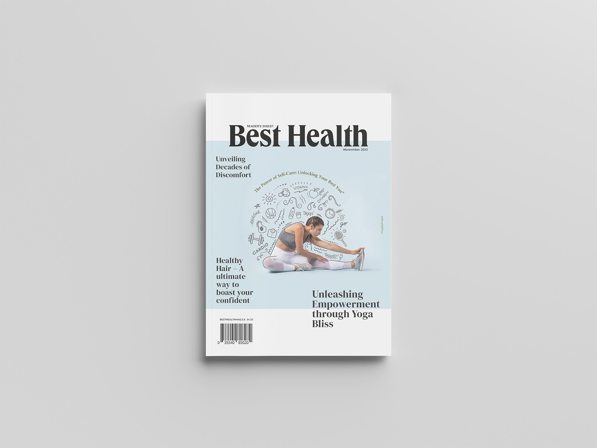
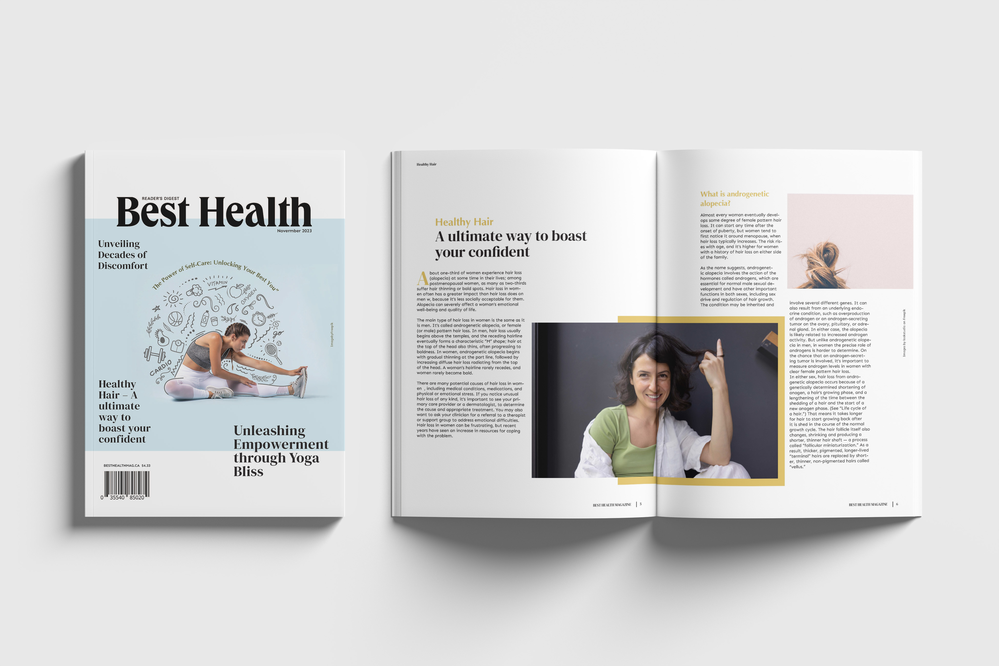

<div id="ajax-page" class="ajax-page-content">
    <div class="ajax-page-wrapper">
        <div class="ajax-page-nav">
            <div class="nav-item ajax-page-prev-next">
                <a class="ajax-page-load" href="portfolio-4.html"><i class="lnr lnr-chevron-left"></i></a>
                <a class="ajax-page-load" href="portfolio-3.html"><i class="lnr lnr-chevron-right"></i></a>
            </div>
            <div class="nav-item ajax-page-close-button">
                <a id="ajax-page-close-button" href="#"><i class="lnr lnr-cross"></i></a>
            </div>
        </div>

        <div class="ajax-page-title">
            <h1>Portfolio Project 1</h1>
        </div>

        
        <div class="portfolio-block">
            <!-- Project Description -->
            <div class="project-description">
                <div class="block-title">
                    <h3>Best Health Magazine Redesign</h3>
                </div>

                <p class="text-justify">For this portfolio piece, I designed Best Health Magazine, a premier
                    publication dedicated to empowering women aged 30 to 50 to lead healthier, more fulfilling
                    lives. Best Health Magazine offers a rich blend of expert advice on nutrition, fitness, mental
                    well-being, and beauty, tailored specifically to address the unique challenges and aspirations
                    of women in this age group. The design focuses on creating a modern, visually appealing layout
                    that enhances readability and engagement, ensuring that the content is both accessible and
                    inspiring.</p>

                <p class="text-justify">To reflect positivity and the impact of health, I chose a palette of light
                    colors: blush pink, sky blue, and sage green. These colors convey a sense of calm, wellness, and
                    vitality. Through thoughtful typography, vibrant imagery, and intuitive navigation, the design
                    aims to elevate the reader's experience, making it easier for women to find the information they
                    need to achieve their best health.</p>
                <!-- /Project Description -->

                <!-- Technology -->
                <div class="tags-block">
                    <div class="block-title">
                        <h3>Technology</h3>
                    </div>
                    <ul class="tags">
                        <li><a>Indesign</a></li>
                        <li><a>Illustrator</a></li>
                        <li><a>Photoshop</a></li>
                    </ul>
                </div>
                <!-- /Technology -->

                <!-- Share Buttons -->
                <div class="btn-group share-buttons">
                    <div class="block-title">

                        <!-- /Share Buttons -->
                    </div>
                    <!-- Project Description -->
                </div>
            </div>
        </div>
        
        <div>
            <div class="portfolio-block">
                <!-- <div class="owl-carousel portfolio-page-carousel">
                    <div class="item">
                        
                    </div>
                    <div class="item">
                        
                    </div>
                    <div class="item">
                        
                    </div>
                </div> -->

                <DIV>
                    <DIV>
                        
                        
                        
                        
                        
                        
                        
                    </DIV>
                </DIV>


                <script type="text/javascript">
                    jQuery(document).ready(function ($) {
                        $('.portfolio-page-carousel').imagesLoaded(function () {
                            $('.portfolio-page-carousel').owlCarousel({
                                smartSpeed: 1200,
                                items: 1,
                                loop: true,
                                dots: true,
                                nav: true,
                                navText: false,
                                margin: 10,
                                autoHeight: true
                            });
                        });
                    });
                </script>
            </div>

        </div>